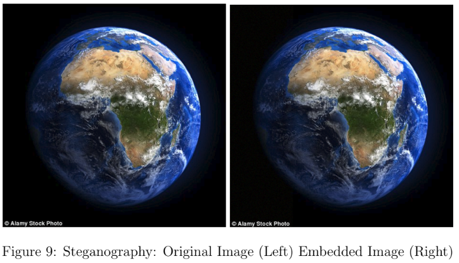

Objective
The main objective for this project was to implement an application that allows users to encrypt a secret image, and embed it into a cover image. The application's output image should visually be identical to the original cover image. The diagram below illustrates the conversion process.
Constraints
- The image format for the application will be in BMP.
- Provide a help function that will display all of the switches and command line arguments used in the application
- Required to implement encryption (any cipher) as part of the application.
- Note that it will require 8 bytes in the cover image to hide a single byte of the secret image. Other data that will also need to be hidden is the filename, including the extension. Calculate the file sizes of both images and ascertain that the cover file is large enough to hold all of the secret image data.
- The application to have at least three separate modules as follows (names are arbitrary): dcstego.py, dcimage.py, dcutils.py
- Depending on the platform and language, provide a means of building the application (makefile, project, etc.) and a set of instructions.
- As part of the testing, experiment with different cover images (large sections of solid colors, lots of colors, etc.) to see if the stego image reveals any obvious artifacts.
- Required to show all the data supporting the success (or lack thereof) of the data embedding scheme in the test document.
Approach
The application is developed in python. The functionality of hiding the pixels of an image will be implemented using a python library called "Pillow". The library provides APIs for reading pixels from images, editing the pixels, and creating images from a few pixels. Other python modules such as "argparse" and "ntpath" are used for improving the utility of the application.
Encryption and Decryption: the encryption functionality will be implemented with the symmetric-key algorithm ”DES”. The user input password will be factored into a key of length 8, 16, or 24 bytes, and used for encrypting or decrypting the pixels and filename of the secret image.
The primary programs for this application are:
- dcstego.py – the main function that will contain the general functionality such as parsing command line arguments, checking file sizes, file formats, etc.
- dcimage.py – this module will contain all of the functions for the image processing and manipulation.
- dcutils.py – this module will contain the two main functions for hiding and extracting the data.
Each pixel has the values R, G and B. Each value can be represented in binary (For instance, 11111111 represents hex vlaue 255). The idea is to hide a single bit in the last bit of a rgb value. Each pixel of the secret image can be splitted and hidden into 9 pixels of the cover image.
A header length (integer value) and encrypted header is embedded before the pixel data of the secret image which details the filename and size of the secret image. The figure below shows the structure of the header before it is embedded into pixels of the cover image.
The application will read the header length and the retrieved header length of bytes will then be decrypted to acquire header information. The header information includes the filename and dimension of the secret image, which is illustrated in the state diagrams.
Lanugage & Libraries
- Language: Python v3.9
- Image processing library: Pillow v9.0.1
- Encryption & decryption library: DES v1.0.6
State Machine Diagram
Usage
To run the program, one of the following two commands must be written...
- dcstego.py [-c] cover image secret image output name password
- -c/-create is the switch to create a steganography image
- cover image is the user provided cover image to be used
- secret image is the user provided secret image to be used
- output name is the name to provide for the outputted steganogprahy image
- password is a word of no more than 24 length to encrypt the secret image
- dcstego.py [-e] stego image password
- -e/-extract is the switch to extract from a steganography image
- stego image is the user provided steganography image to be used
- password is a word of no more than 24 length to decrypt the secret image
Testing
Test 1: One Solid Color
No visible dissertations between the two images.
No changes in the statistics of the of the images, however results of the histogram show that there is a slight change to the modification of the RGB.
Test 2: Five Solid Colors
No visible dissertations between the two images.
No changes in the statistics of the of the images, however just like experiment 1 the results of the histogram show that there is a change to the modification of the RGB that is a bit more apparent.
Test 3: Complex Colored Image
No visible dissertations between the two images.
No changes in the statistics of the of the images, however just like the previous experiments the results of the histogram show that there is a change to the modification of the RGB that is a bit more apparent.
Test 4: Complex Black & White Image
No visible dissertations between the two images.
No changes in the statistics of the of the images, however just like the previous experiments the results of the histogram show that there is a change to the modification of the RGB that is clear. The image of histogram is clearly black and white greyscale but looking closely at the histograms shows colorized pixels spread through out the image. There is a clear distinction that the image has been modified if looking directly at the histogram.
Conclusion
This assignment has been of the most interesting assignments that I have done in which I am fascinated by the process of hiding a secret message within a larger one in such a way that no one can discernibly know the presence or contents of the hidden message. I can see the practicality of maintaining a secret communication between two or parties. The results of my implementation shows that my secret image is completely concealed within my cover image. Only with tools like photoshop or gimp and analyzing the statistics of the images will reveal slight modification to the images. If I were to improve this implementation, I would have to modify the image processing to better hide the pixels to be indiscernible when viewing the histogram.
Appendix
Source code
The project source code can be found here .